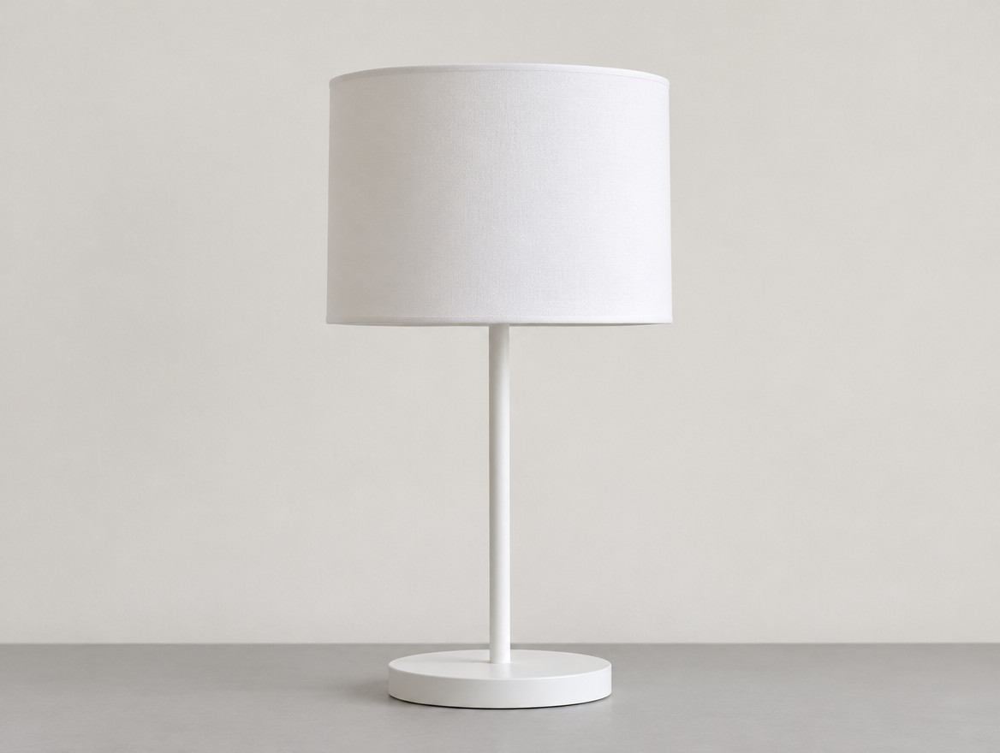
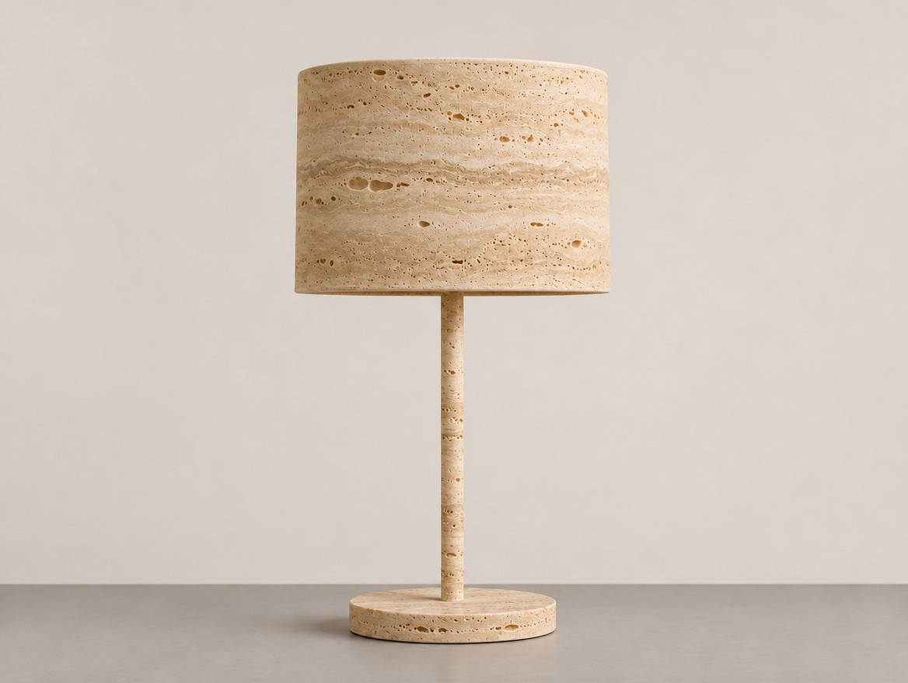
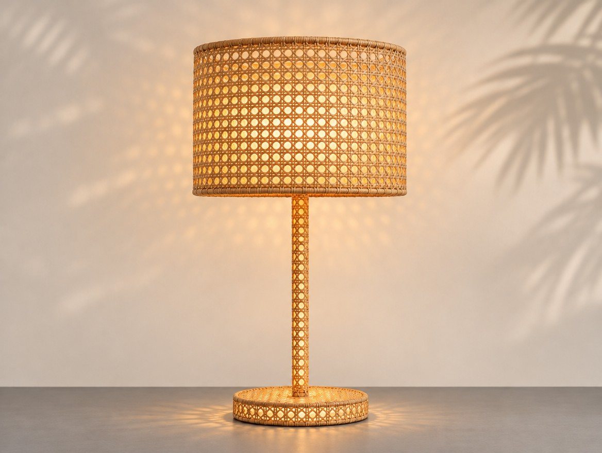
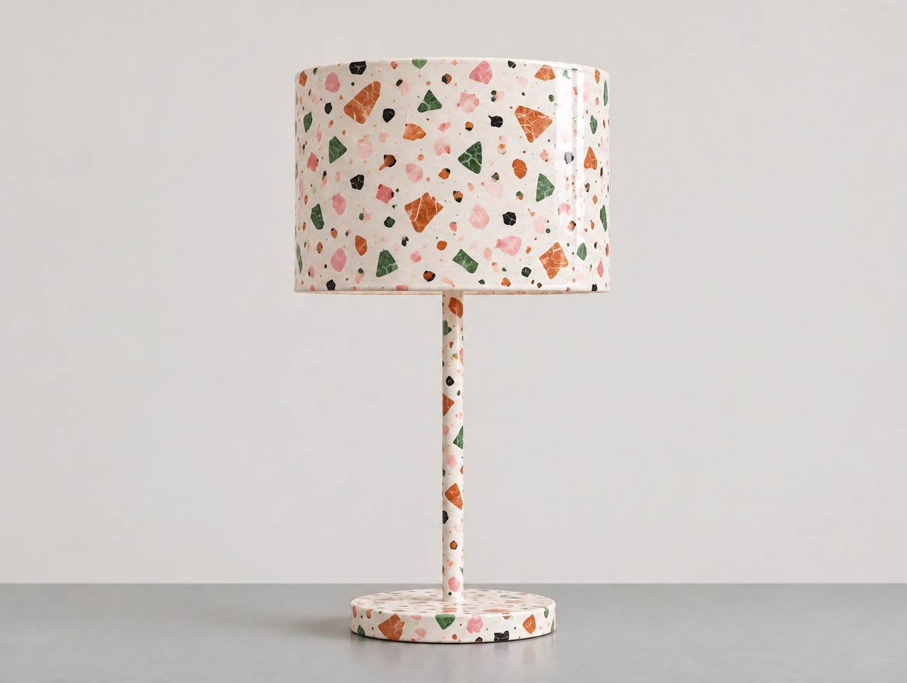
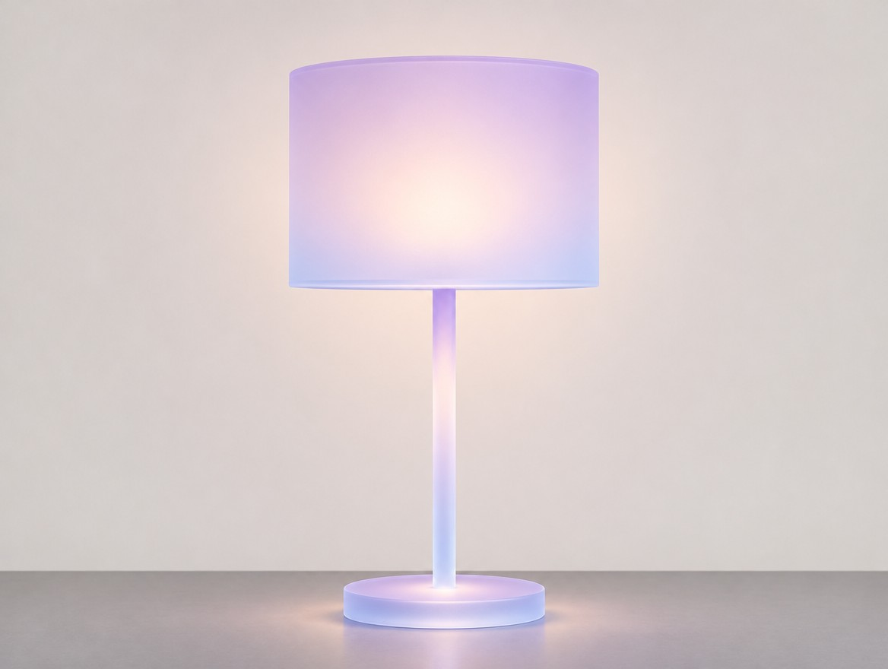
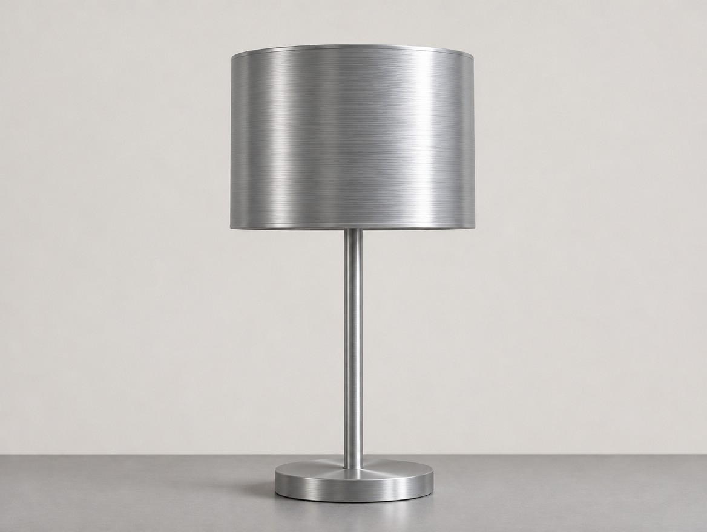

AI 문방구 · 재질 5
‘고급스럽게’ 말고
재질 이름 5개
댓글로 신청해주셔서 고마워요. 영상 속 사진은 전부 힉스필드(GPT Image 2.6)로 같은 흰 스탠드에 재질 단어만 바꿔 다시 만든 결과예요. 프롬프트는 버튼을 누르면 복사돼요.
HOW쓰는 법
같은 사진 + “재질만 바꿔줘”
사진을 이미지 AI(힉스필드 GPT Image 2.6에서 만들었어요)에 올리고 아래 문장 앞에 “the exact same object, same shape, same framing,”을 붙이세요. “고급스럽게”보다 재질 이름 하나가 훨씬 정확해요.
the exact same object, same shape and proportions, same framing and background, but
BASE기준 사진 (전)

a plain simple white table lamp with a round white shade and thin white stem, standing on a plain light gray table against a plain off-white wall, soft natural daylight, straight-on product photo
01travertine
트래버틴 · 구멍 난 베이지 돌
표면에 작은 구멍과 가로 결이 있는 베이지 돌이에요. 호텔 로비나 갤러리 같은 차분한 고급스러움이 나요.
전

후the whole lamp base, stem and shade are now made of travertine stone: beige porous stone with visible pits and horizontal veins, matte honed finish, realistic product photo, no text, no logos
02rattan
라탄 · 손으로 엮은 등나무
엮은 사이로 빛이 새어 나와 그림자까지 예뻐져요. 휴양지·카페 소품에 잘 맞아요.
전

후the shade and base are now hand-woven natural rattan cane with an open weave pattern, warm light glowing through the weave, realistic product photo, no text, no logos
03terrazzo
테라조 · 돌 조각 무늬
흰 바탕에 색 돌 조각이 박힌 재질이에요. 밋밋한 물건이 경쾌해져요.
전

후made of colorful terrazzo: white base with scattered chips of terracotta, green, pink and black stone, polished surface, realistic product photo, no text, no logos
04frosted acrylic
반투명 아크릴
빛이 뿌옇게 비치는 플라스틱이에요. 파스텔 색을 같이 적으면 요즘 소품샵 느낌이 나요.
전

후made of frosted translucent acrylic in soft lavender and pale blue, light glowing softly through the frosted plastic, realistic product photo, no text, no logos
05brushed aluminum
브러시드 알루미늄 · 결 있는 금속
가는 결이 살아 있는 은색 금속이에요. 전자기기·가구 사진을 단단해 보이게 해요.
전

후made of brushed aluminum metal with fine visible linear brush grain, cool silver reflections, realistic product photo, no text, no logos
TIP내 사진으로 하는 법
- 배경이 단순한 사진 물건이 가운데 있고 배경이 깨끗할수록 모양이 안 바뀌어요.
- 재질은 하나만 두 개를 섞으면 하나가 묻혀요. 마음에 들면 그다음에 색을 바꿔요.
- 모양이 바뀌면 “same shape and proportions”를 문장 맨 앞으로 옮겨서 다시 시켜요.